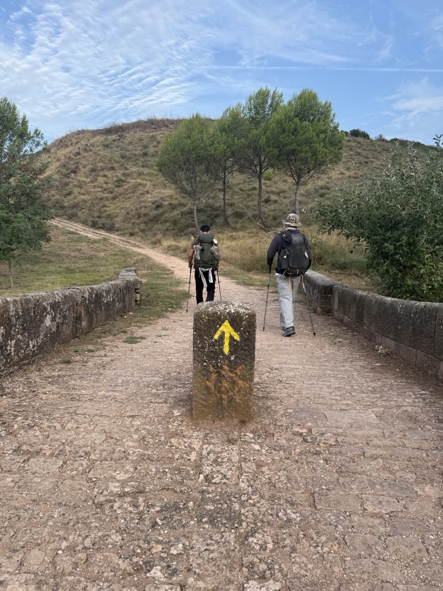
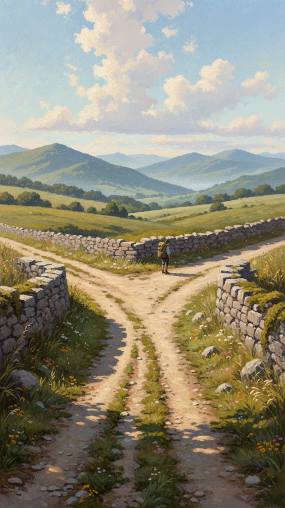
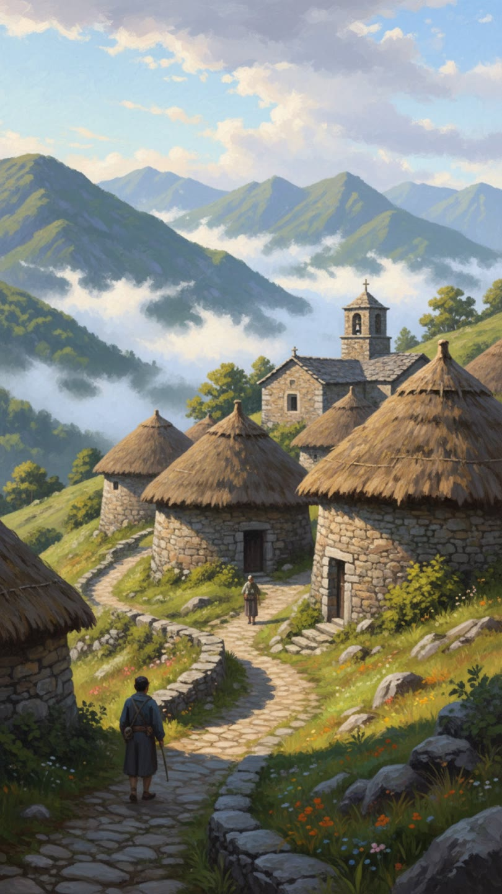
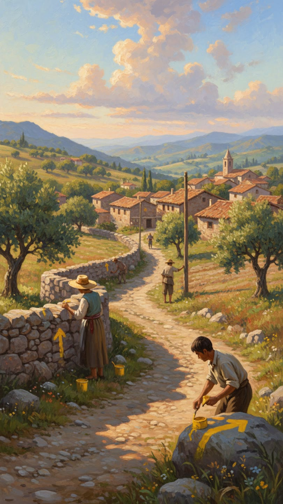
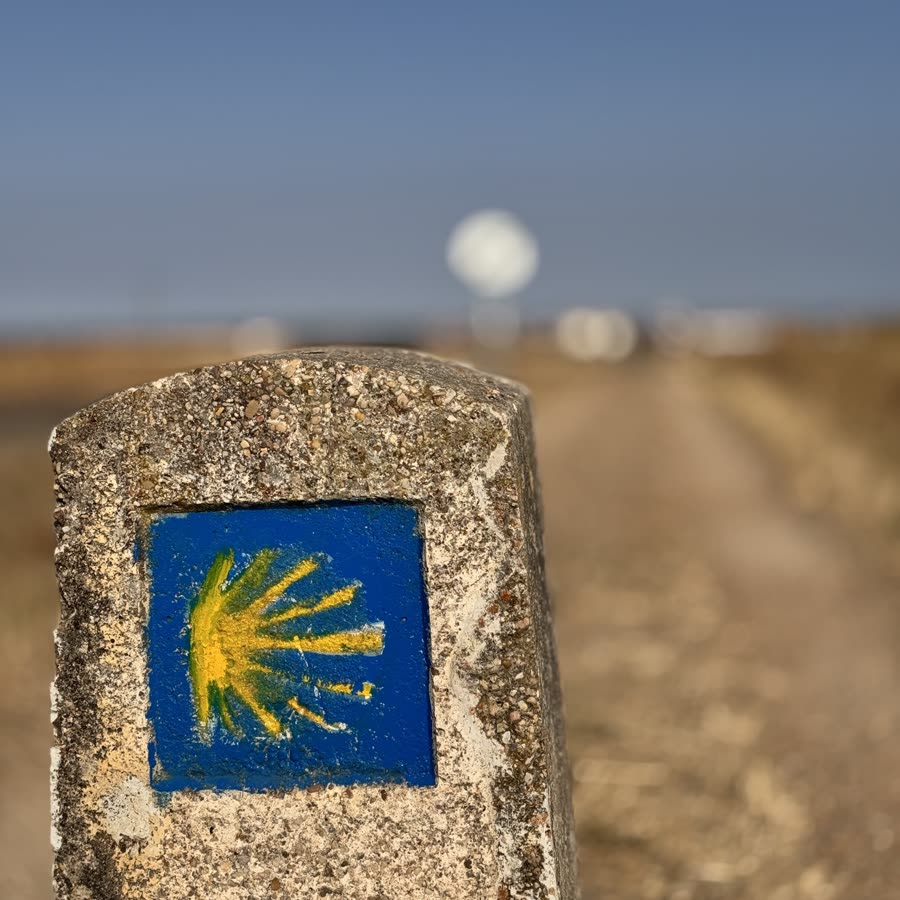
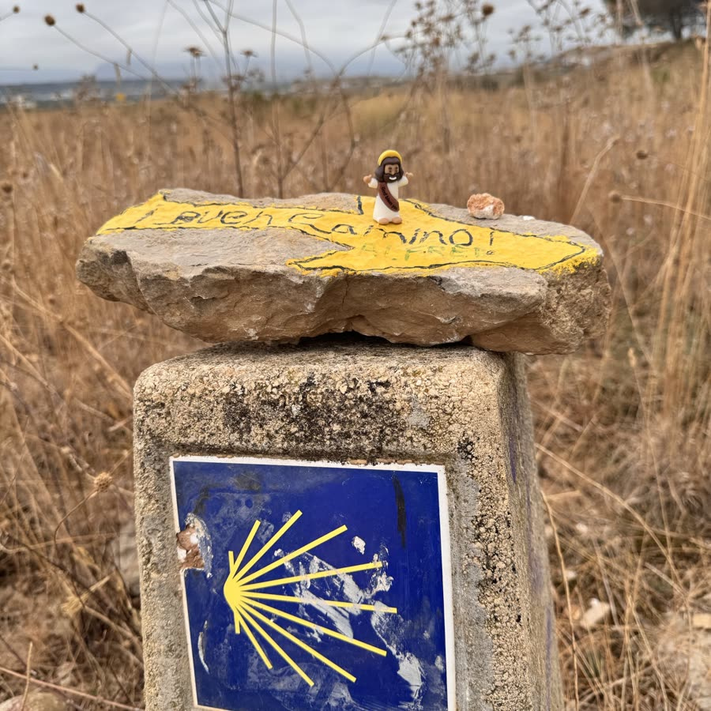
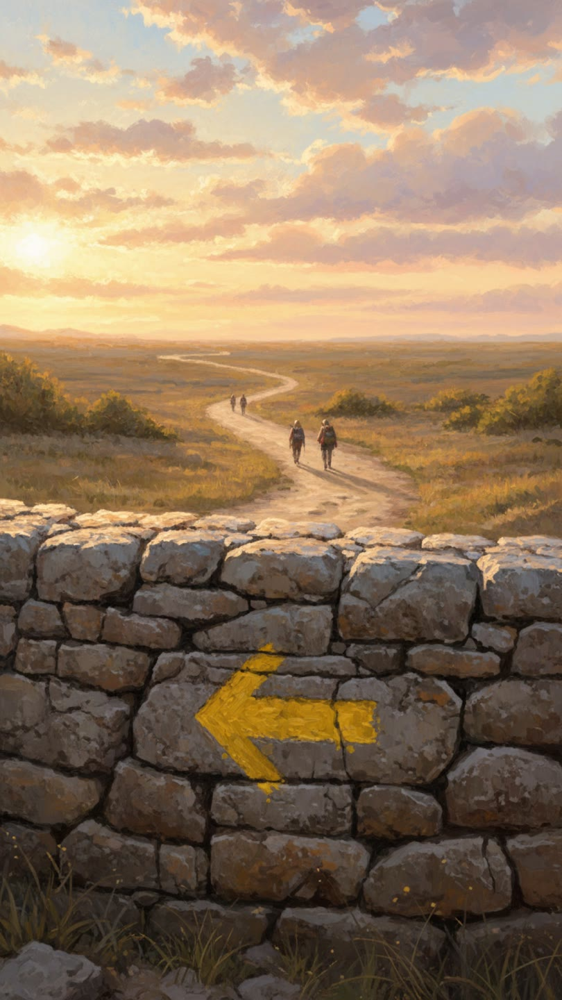

순례자의 한끼한밤
순례자의 한끼한밤순례길 800km를 안내하는 노란 화살표,
처음 그린 사람은 따로 있어요.
순례길을 걸으면 하루에도 몇 번씩 노란 화살표를 만나요. 돌다리 기둥에도, 담벼락에도, 길바닥에도요. 너무 당연하게 있어서 나라에서 세운 표지인 줄 알기 쉬운데, 시작은 한 사람이었어요.

1980년대 초, 순례길엔 지금 같은 표시가 거의 없었어요. 걷는 사람이 드물었고, 갈림길에 서면 어느 쪽으로 가야 할지 알려 주는 것도 없었죠.

그때 산골 마을 오 세브레이로의 신부님, 엘리아스 발리냐가 나서요.

신부님이 낡은 차에 노란 페인트를 싣고
갈림길마다 화살표를 그리기 시작한 해.
1984년, 신부님은 낡은 차에 노란 페인트를 가득 싣고 갈림길마다 화살표를 그리기 시작했대요. 페인트는 도로 공사에 쓰고 남은 것이었다고 전해져요. 정확한 기록이라기보다 전해 오는 이야기지만, 그래서 노란색이었다는 설명이 꽤 그럴듯하죠.
혼자 다 칠한 건 아니었어요. 여러 마을의 친구들, 순례자 협회 사람들이 함께 길을 표시했어요. 노란 화살표는 신부님 한 분이 시작했고, 많은 사람이 이어 그린 셈이에요.

그 뒤로 길은 다시 사람들로 채워졌어요. 1985년에 순례 증명서를 받은 사람은 700명도 안 됐는데, 2024년엔 50만 명 가까이가 증명서를 받았어요.
순례 증명서를 받은 사람
- 1984
엘리아스 발리냐 신부와 친구들이 노란 화살표를 그리기 시작
- 1985
순례 증명서를 받은 사람, 700명도 안 됨
- 2024
순례 증명서를 받은 사람, 50만 명 가까이

저도 2025년에 32일 동안 프랑스길을 걸었는데, 갈림길마다 노란 화살표가 꼭 있었어요. 돌기둥에 페인트로 쓱 칠한 것, 파란 타일에 노란 가리비를 넣은 표지석, 누가 돌멩이에 직접 그려 올려 둔 것까지 모양도 가지가지였어요.



메세타를 걷던 날에는 길바닥에 돌멩이를 모아 만든 커다란 화살표도 만났어요. 뒤에 오는 사람이 헷갈리지 말라고 누군가 하나하나 주워 놓았겠죠.

그 노란 화살표를 따라,
오늘도 누군가는 그 길을 걸어요.
For pilgrims passing by
The yellow arrows that guide pilgrims along the 800 km Camino Francés began with one man. In the early 1980s there were almost no waymarks. In 1984 Elías Valiña, the parish priest of the mountain village of O Cebreiro, loaded yellow paint into his old car and began painting arrows at the crossroads; the paint is said to have been left over from road works. He did not do it alone: friends from many villages and pilgrim associations helped mark the Way. In 1985 fewer than 700 pilgrims received the Compostela; in 2024 nearly 500,000 did. When I walked for 32 days in 2025, there was a yellow arrow at every fork.
참고한 자료
- 스페인 산티아고 순례길 협회 연맹(caminosantiago.org): 엘리아스 발리냐 신부와 노란 화살표
- 시작 연도는 1984년이라는 자료가 많고 1982년이라는 자료도 있습니다
- 도로 공사 페인트 이야기는 전해지는 이야기로 적었습니다
- 순례자 수: 산티아고 순례자 사무소 증명서 통계(1985년 700명 미만, 2024년 약 49만 9천 명)
- 사진·영상: 2025년 프랑스길에서 직접 찍은 것 / 그림: AI로 그린 유화
🕯️ 오늘 밤 이야기는 여기까지.
노란 화살표를 따라 걸어 보고 싶은 길이 있나요?